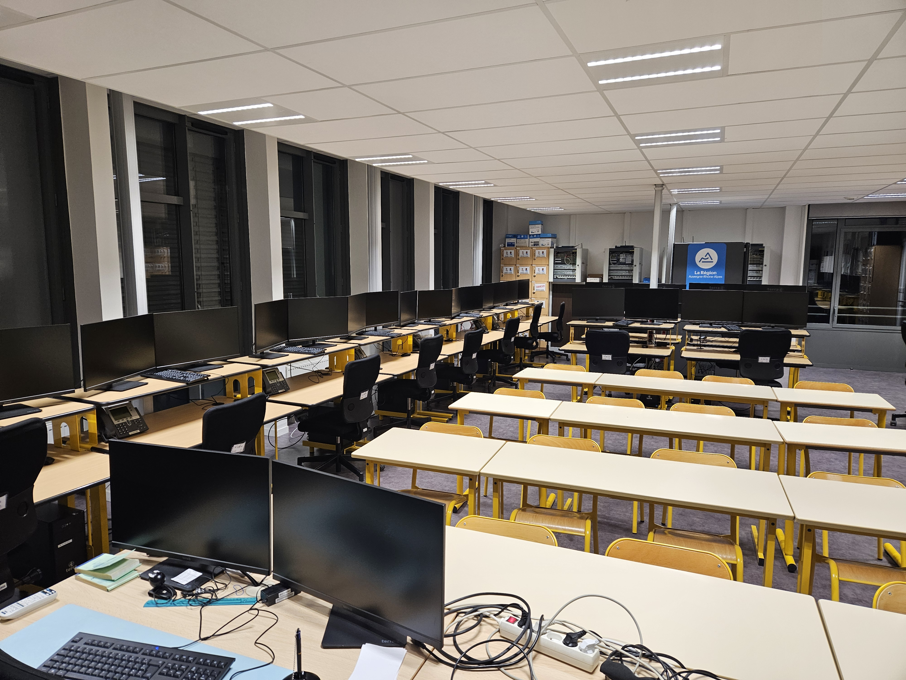
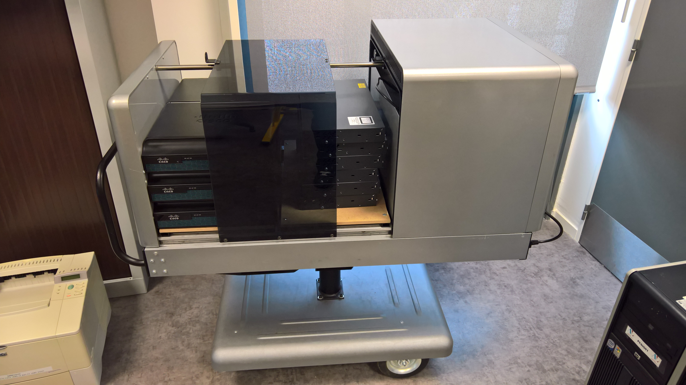
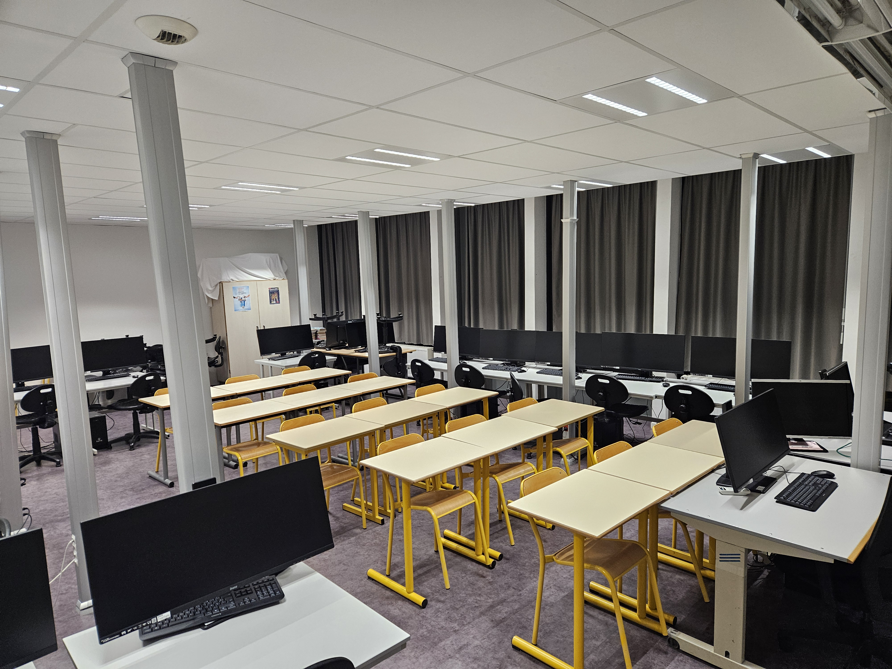
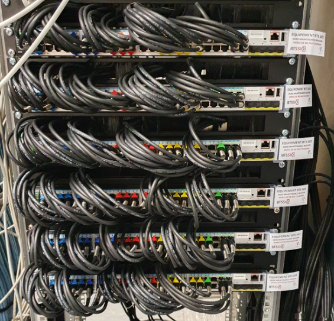
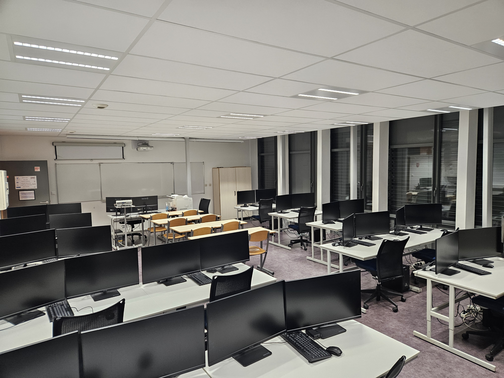

Mes Projets
Projet 1 - Mise en place d'un Réseau poste à poste
Le but de cette activité était de simuler un réseau poste à poste entre deux PC portables fournis par le lycée. Le travail se déroulant en binôme, il a pu être exécuté rapidement et efficacement.
La première partie de ce travail consistait à brancher par câble RJ45 et port console notre PC sur les serveurs locaux. Ensuite, la grande partie du TP se faisait sur l'invite de commande du routeur.
L'activité a donc pu mêler une partie de manipulation virtuelle sur un invite en Linux et une partie physique en manipulant directement sur les commutateurs locaux.
La finalité de l'activité consistait à faire communiquer les PC configurés de nos camarades avec le nôtre. Cette activité était réellement très intéressante, et nous a donné un peu d'expérience dans la configuration de ports.



Projet 2 - Préparation de mise en réseau d'une salle
Pour commencer, cette activité nous proposait de créer un plan pour l'aménagement d'une salle de classe. Dans le contexte, celle-ci allait être rénovée et notre mission était de faire un nouveau plan.
Sur ce plan fourni devaient figurer : le traçage des câbles réseau, les prises rajoutées, les tables (leur organisation) et les pylônes (pour passer les câbles).
On nous a laissé la liberté de placer les tables comme on le voulait. On nous a aussi laissé la salle en question en libre-service pour que l'on puisse y accéder pour y faire des mesures.
Une autre chose intéressante, nous devions nous-mêmes trouver les références des câbles et des pylônes qui allaient être utilisés pour la rénovation. Un catalogue a donc été mis à notre disposition et le reste était de notre ressort.
Cette activité étant moins longue que la précédente présentée, elle ne fut pas aussi intéressante, mais cela constituait un bon exercice pour nous aider à répondre aux besoins d'un client (même si c'était une simulation).


Projet 3 - Création d'un site web
Lors de celle-ci, il nous a été demandé de réaliser un site web par nos propres moyens et de le faire héberger et référencer. N'ayant aucune expérience dans ce domaine, ce fut une totale découverte.
Ce fut une surprise de découvrir comment étaient faits les sites web et d'en créer un moi-même, le code n'était pas forcément complexe mais la pratique était souvent plus compliquée que la théorie.
La partie hébergement de la mission m'a permis de découvrir plusieurs hébergeurs et comment référencer un site pour qu'il soit visible sans avoir le lien précis du site.
Le travail de recensement fait lors de cette activité avait pour but de prouver nos recherches, et nous faire chercher plusieurs moyens d'hébergements et de prouver notre compréhension du code que nous avions écrit.
J'ai personnellement apprécié ce travail, même s'il ne rentre pas entièrement dans les critères de la filière, il se retrouve très bénéfique pour des activités comme la création d'un portfolio en ligne.
